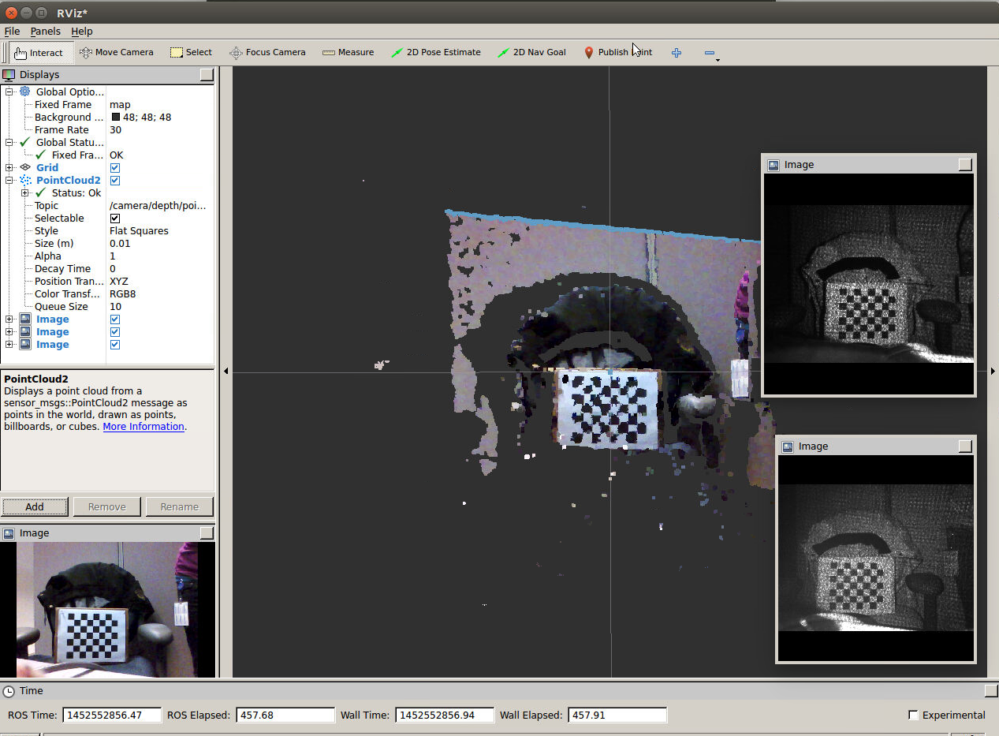

Please make sure that you have a working camera and that the software stack is installed properly. This can be checked by connecting the camera (to a USB3 port) and running one of the provided librealsense samples. If this does not work, you should first fix this issue before continuing with the ROS integration.
Successful execution of command will build target “r200_camera_nodelet”
Sample launch files are available in realsense/launch directory
realsense_r200_launch_preset.launch
realsense_r200_launch_manual.launch
Publishing stream data from the Intel RealSense R200 (DS4) camera
NoneColor camera
camera/color/image_raw (sensor_msgs/Image)
Color rectified image. RGB format.
camera/color/camera_info
Calibration dataDepth camera
camera/depth/image_raw (sensor_msgs/Image)
uint16 depths in mm
camera/depth/camera_info
Calibration data
camera/depth/points (sensor_msgs/PointCloud2)
Registered XYZRGB point cloud.Infrared camera
camera/infrared1/image_raw (sensor_msgs/Image)
camera/infrared1/camera_info
Calibration dataInfrared2 camera
camera/infrared2/image_raw (sensor_msgs/Image)
camera/infrared2/camera_info
Calibration dataMode (string, default: preset)
Specify mode to start camera streams with. Preset mode starts all streams with defaults values for each stream’s width/height and FPS. In Manual mode, camera streams will be set with resolution and FPS values passed.
cHeight (int, default: 480)
Specify the color camera height resolution.
cWidth (int, default: 640)
Specify the color camera width resolution.
dHeight (int, default: 360)
Specify the depth camera height resolution.
dWidth (int, default: 480)
Specify the depth camera width resolution.
cFPS (int, default: 60)
Specify the color camera FPS
dFPS (int, default: 60)
Specify the depth camera FPS
enableDepth (bool, default: 1)
Specify if to enable or not the depth camera. 1 is true. 0 is false.
enableColor (bool, default: 1)
Specify if to enable or not the color camera. 1 is true. 0 is false.
enablePointCloud (bool, default: 1)
Specify if to enable or not the point cloud camera. 1 is true. 0 is false.
Supported options: Here are r200 camera supported options that can be set
COLOR_BACKLIGHT_COMPENSATION : [0, 4]
COLOR_BRIGHTNESS : [0, 255]
COLOR_CONTRAST : [16, 64]
COLOR_EXPOSURE : [0, 0]
COLOR_GAIN : [0, 256]
COLOR_GAMMA : [100, 280]
COLOR_HUE : [-2200, 2200]
COLOR_SATURATION : [0, 255]
COLOR_SHARPNESS : [0, 7]
COLOR_WHITE_BALANCE : [2000, 8000]
COLOR_ENABLE_AUTO_EXPOSURE : [0, 0]
COLOR_ENABLE_AUTO_WHITE_BALANCE : [0, 1]
R200_LR_AUTO_EXPOSURE_ENABLED : [0, 1]
R200_LR_GAIN : [100, 1600]
R200_LR_EXPOSURE : [0, 333]
R200_EMITTER_ENABLED : [0, 1]
R200_DEPTH_CONTROL_PRESET : [0, 5]
R200_DEPTH_UNITS : [1, 2147483647]
R200_DEPTH_CLAMP_MIN : [0, 65535]
R200_DEPTH_CLAMP_MAX : [0, 65535]
R200_DISPARITY_MULTIPLIER : [1, 1000]
R200_DISPARITY_SHIFT : [0, 0] NoneSimply type:
$ roslaunch realsense realsense_r200_launch.launchThis will launch the camera nodelet. You will see the camera lights up.
For color, infrared1 and infrared2 streams, you can open RVIZ and load the published topics.
You can also open RVIZ and load the provided RVIZ configuration file: realsenseRvizConfiguration.rviz. 
Other commands to view streams:
For Color stream
$ rosrun image_view image_view image:=/camera/color/image_raw
For depth stream
Verified data and other info by rostopic echo command for image_raw and camera_info.
$ rostopic echo /camera/depth/image_raw
$ rostopic echo /camera/depth/camera_infoTo view it in rviz, set camera_depth_optical_frame using following command:
$ rosrun tf static_transform_publisher 0.0 0.0 0.0 0.0 0.0 0.0 map camera_depth_optical_frame 100To view it using image_view:
$ rosrun pcl_ros convert_pointcloud_to_image input:=/camera/depth/points output:=/my_image
$ rosrun image_view image_view image:=/my_imageTech and dependencies * librealsense.so
System: * Linux 14.04+ * ROS Indigo * R200 (DS4) camera
** The ROS integration has been tested on a 64bit machine with Linux 14.04 (Trusty) and ROS Indigo.
Currently camera ROS node supports following formats * Color stream: RGB8 * Depth stream: Y16 * Infrared stream: Y8